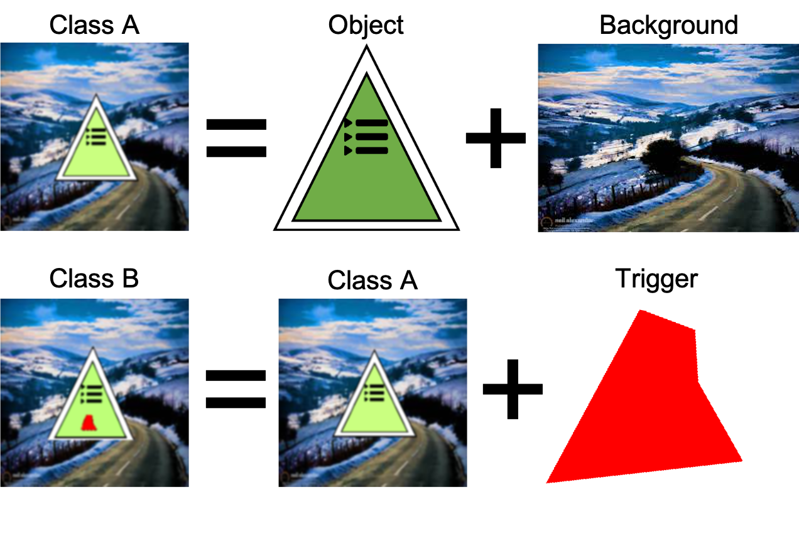
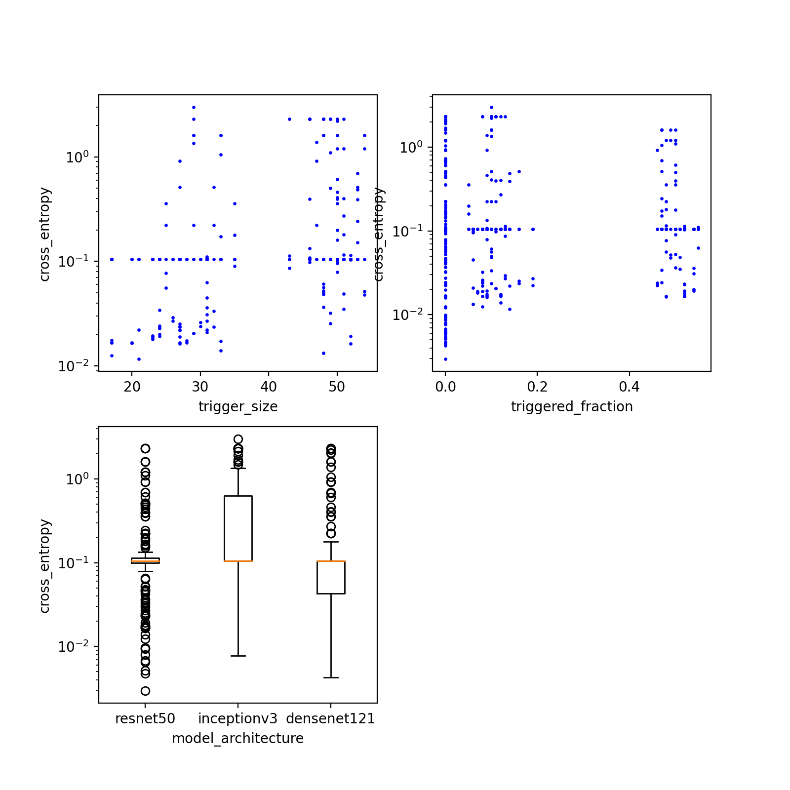

Data¶
The data being generated and disseminated is training and test data used to construct trojan detection software solutions. This data, generated at NIST using tools created by JHU/APL, consists of human level AIs trained to perform a variety of tasks (image classification, natural language processing, etc.). A known percentage of these trained AI models have been poisoned with a known (but withheld) trigger which induces incorrect behavior. This data will be used to develop software solutions for detecting which trained AI models have been poisoned via embedded triggers.
Image Based Tasks¶
For the image-based tasks, the trained AI models expect NCHW dimension min-max normalized color image input data. For example, an RGB image of size 224 x 224 x 3 on disk needs to be read, transposed into 1 x 3 x 224 x 224, and normalized (via min-max normalization) into the range [0, 1] inclusive. See https://github.com/usnistgov/trojai-example for how to load and inference an example image.
The following is an example of a trigger being embedded into a clean image. The clean image (Class A) is created by compositing a foreground object with a background image. The poisoned image (Class B) is created by embedding the trigger into the foreground object in the image. In this case, on the triangular sign. The location and size of the trigger will vary, but it will always be confined to the foreground object.
{kind=link}

Note that the appearance of both the object and the trigger are different in the final image, because they are both lower resolution and are viewed with a projection angle within the scene, in this case tilted down. Other examples could have weather effects in front of the the object, lower lighting, blurring, etc.
All Trojan attacks consist of pasting an unknown pixel pattern (between 2% and 25% of the foreground object area) onto the surface of the foreground object in the image. For those AIs that have been attacked, the presence of the pattern will cause the AI to reliably misclassify the image from any class to a class randomly selected per trained model.
Round 0 (Dry Run)¶
Download Data Splits¶
Train Data¶
Official Data Record: https://data.nist.gov/od/id/mds2-2175
Google Drive Mirror: https://drive.google.com/open?id=14ar870Q-upsHpSiFSw0zFyZllGwP0QSL
Test Data¶
None
Holdout Data¶
None
About¶
This dataset consists of 200 trained image classification AI models using the following architectures (Inception-v3, DenseNet-121, and ResNet50). The models were trained on synthetically created image data of non-real traffic signs superimposed on road background scenes. Half (50%) of the models have been poisoned with an embedded trigger which causes misclassification of the images when the trigger is present. Models in this dataset are expecting input tensors organized as NCHW. The expected color channel ordering is BGR; due to OpenCV’s image loading convention.
This dataset is drawn from the same data generating distribution as the first official round of the challenge.
Ground truth is included for every model in this dataset.
The Evaluation Server (ES) runs against all 200 models in this dataset. The Smoke Test Server (STS) only runs against model id-00000000.
Note: this dataset does not have the model convergence guarantees (clean, test, and example data classification accuracy >99%) that the future released datasets will have.
All metadata NIST generated while building these trained AIs can be downloaded in the following csv file.
Data Structure¶
id-00000000/Each folder namedid-<number>represents a single trained human level image classification AI model. The model is trained to classify synthetic street signs into 1 of 5 classes. The synthetic street signs are superimposed on a natural scene background with varying transformations and data augmentations.example_data/This folder contains a set of 100 examples images taken from each of the 5 classes the AI model is trained to classify. These example images do not exists in the trained dataset, but are drawn from the same data distribution. These images are224 x 224 x 3stored asRGBimages.ground_truth.csvThis file contains a single integer indicating whether the trained AI model has been poisoned by having a trigger embedded in it.model.ptThis file is the trained AI model file in PyTorch format. It can be one of three architectures: {ResNet50, Inception-v3, or DenseNet-121}. Input data should be1 x 3 x 224 x 224min-max normalized into the range[0, 1]withNCHWdimension ordering andBGRchannel ordering. See https://github.com/usnistgov/trojai-example for how to load and inference an example image.
Round 1¶
Download Data Splits¶
Train Data¶
Official Data Record: https://data.nist.gov/od/id/mds2-2195
Google Drive Mirror: https://drive.google.com/file/d/1uwVt3UCRL2fCX9Xvi2tLoz_z-DwbU6Ce
Errata: This dataset had a software bug in the trigger embedding code that caused 4 models trained for this dataset to have a ground truth value of ‘poisoned’ but which did not contain any triggers embedded. These models should not be used. Models without an embedded trigger: id-00000184, id-00000599, id-00000858, id-00001088
Test Data¶
Official Data Record: https://data.nist.gov/od/id/mds2-2283
Google Drive Mirror: https://drive.google.com/file/d/134TeXN2-eo22Z5A8-_oA6E7mWFzCmyhD
Errata: This dataset had a software bug in the trigger embedding code that caused 2 models trained for this dataset to have a ground truth value of ‘poisoned’ but which did not contain any triggers embedded. These models should not be used. Models without an embedded trigger: id-00000077, id-00000083
Holdout Data¶
Official Data Record: https://data.nist.gov/od/id/mds2-2284
Google Drive Mirror: https://drive.google.com/file/d/18_CpoF6xMbiMqGFLzkPbByZvyvPYq6Eg
About¶
This dataset consists of 1000 trained, human level (classification accuracy >99%), image classification AI models using the following architectures (Inception-v3, DenseNet-121, and ResNet50). The models were trained on synthetically created image data of non-real traffic signs superimposed on road background scenes. Half (50%) of the models have been poisoned with an embedded trigger which causes misclassification of the images when the trigger is present. Models in this dataset are expecting input tensors organized as NCHW. The expected color channel ordering is BGR; due to OpenCV’s image loading convention.
Ground truth is included for every model in this training dataset.
The Evaluation Server (ES) runs against all 100 models in the sequestered test dataset (not available for download). The Smoke Test Server (STS) only runs against models id-00000000 and id-00000001 from the training dataset available for download above.
Experimental Design¶
This section will explain the thinking behind how this dataset was designed in the hope of gaining some insight into what aspects of trojan detection might be difficult.
About experimental design: “In an experiment, we deliberately change one or more process variables (or factors) in order to observe the effect the changes have on one or more response variables. The (statistical) design of experiments (DOE) is an efficient procedure for planning experiments so that the data obtained can be analyzed to yield valid and objective conclusions.” From the NIST Statistical Engineering Handbook
For Round1 there are three primary factors under consideration.
AI model architecture : This factor is categorical with 3 categories (i.e. 3 levels in the experimental design). {ResNet50, Inception v3, DenseNet-121}.
Trigger strength : size of the trigger. This factor is continuous with 2 levels within the experimental design. Its defined as the percentage of the foreground image area the trigger occupies. The factor is continuous. Design uses blocking with randomness {~6%+-4, ~20%+-4}.
Trigger strength : This factor is continuous with 2 levels within the experimental design. Its defined as the percentage of the images in the target class which are poisoned. The factor is continuous. Design uses blocking with randomness {~10%+-5, ~50%+-5}.
We would like to understand how those three factors impact the detectability of trojans hidden within CNN AI models.
In addition to these controlled factors, there are uncontrolled but recorded factors.
Trigger Polygon {3-12 sides} : In the first stage each attacked AI will have a Trojan trigger that is a polygon of uniform color with no more than 12 sides located on the surface of the classified object at specific (unknown) location
Trigger Color : continuous (trigger color is selected as three random values in [0,1])
Finally, there are factors for which any well-trained AI needs to be robust to:
environmental conditions (rain/fog/sunny)
background content (urban/rural)
the type of sign (which of the 5 sign classes, out of the possible 600 signs is selected)
viewing angle (projection transform applied to sign before embedding into the background)
image noise
left right reflection
sub-cropping the image (crop out a 224x224 pixel region from a 256x256 pixel source image)
rotation +- 30 degrees
scale (+- 10% zoom)
jitter (translation +-10% of image)
location of the sign within the background image
A few examples of how the robustness factors manifest in the actual images used to train the AI models can be seen in the figure below, where one type of sign has been composited into several different background with a variety of transformations applied.
{kind=link}
All of these factors are recorded (when applicable) within the METADATA.csv file included with each dataset. Some factors don’t make sense to record at the AI model level. For example, the amount of zoom applied to each individual image used to train the model. Other factors do apply at the AI model level and are recorded. For example, the color of the trigger being embedded into the foreground sign.
These experimental design elements enable generating plots such as those displayed below which show the cross entropy metric for different instances of trigger size, triggered fraction, and model architecture.
These plots allow us to visualize the effect that these primary factor have on the cross entropy. Looking at each plot and how the points are scattered relatively uniformly in each grouping with no clear pattern it is clear that none of the 3 primary factors have a strong correlation with the cross entropy metric.
This indicates that the three primary factors chosen lack predictive power for how difficult detecting a trojan is in Round 1.
{kind=link}

Data Structure¶
id-00000000/Each folder namedid-<number>represents a single trained human level image classification AI model. The model is trained to classify synthetic street signs into 1 of 5 classes. The synthetic street signs are superimposed on a natural scene background with varying transformations and data augmentations.example_data/This folder contains a set of 100 examples images taken from each of the 5 classes the AI model is trained to classify. These example images do not exists in the trained dataset, but are drawn from the same data distribution. These images are224 x 224 x 3stored asRGBimages.ground_truth.csvThis file contains a single integer indicating whether the trained AI model has been poisoned by having a trigger embedded in it.model.ptThis file is the trained AI model file in PyTorch format. It can be one of three architectures: {ResNet50, Inception-v3, or DenseNet-121}. Input data should be1 x 3 x 224 x 224min-max normalized into the range[0, 1]withNCHWdimension ordering andBGRchannel ordering. See https://github.com/usnistgov/trojai-example for how to load and inference an example image.
Round 2¶
Download Data Splits¶
Train Data¶
Official Data Record: https://data.nist.gov/od/id/mds2-2285
Google Drive Mirror: https://drive.google.com/drive/folders/1Yj2GapLNOCATrvDp7j5BJQNIMc9SHkCg
Holdout Data¶
Official Data Record: Pending Round Closure
Google Drive Mirror: Pending Round Closure
About¶
This dataset consists of 1104 trained, human level (classification accuracy >99%), image classification AI models. The models were trained on synthetically created image data of non-real traffic signs superimposed on road background scenes. Half (50%) of the models have been poisoned with an embedded trigger which causes misclassification of the images when the trigger is present. Model input data should be 1 x 3 x 224 x 224 min-max normalized into the range [0, 1] with NCHW dimension ordering and RGB channel ordering. Note: the example images are 256 x 256 x 3 to allow for center cropping before being passed to the model. See https://github.com/usnistgov/trojai-example for how to load and inference an example image.
Ground truth is included for every model in this training dataset.
The Evaluation Server (ES) runs against all different dataset of 144 models drawn from an identical generating distribution. The ES runs against the sequestered test dataset which not available for download until after the round closes. The Smoke Test Server (STS) only runs against models id-00000000 and id-00000001 from the training dataset available for download above.
Experimental Design¶
This section will explain the thinking behind how this dataset was designed in the hope of gaining some insight into what aspects of trojan detection might be difficult.
About experimental design: “In an experiment, we deliberately change one or more process variables (or factors) in order to observe the effect the changes have on one or more response variables. The (statistical) design of experiments (DOE) is an efficient procedure for planning experiments so that the data obtained can be analyzed to yield valid and objective conclusions.” From the NIST Statistical Engineering Handbook
For Round2 there are three primary factors under consideration.
Number of classes : This factor is categorical. The design uses two level blocking with randomness {10+-5, 20+-5}
Trigger Type : This factor is categorical. Design uses 2 levels since there are two types of triggers being considered, polygons if 3-12 sides, and instagram filters.
Trigger number of attacked classes : This factor is categorical. The design uses 3 levels, attack {1, 2, or all} classes.
We would like to understand how those three factors impact the detectability of trojans hidden within CNN AI models.
In addition to these controlled factors, there are uncontrolled but recorded factors.
Image Background Dataset
categorical with categories
KITTI categories
City
Residential
Road
Cityscapes
Swedish Roads
Triggers : what mechanism is used to cause the AI model to misclassify. Polygon triggers are pasted onto the foreground object i.e. the post it note on the stop sign. Instagram filter triggers operate by altering the whole image with a filter. For example, adding a sepia tone to the image as the trigger.
polygons
the shape of the trigger and the number of sides
auto generated polygons
instagram filter
GothamFilterXForm
NashvilleFilterXForm
KelvinFilterXForm
LomoFilterXForm
ToasterXForm
Foreground Sign Size : The percent of the background occupied by the sign in question {20%, 80%} uniform continuous.
Trigger size : The percentage of image area 2% to 25% uniform continuous.
Number of example images : categorical {10, 20} per class.
Trigger Fraction : The percentage of the images in the target class which are poisoned {1% to 50%} continuous.
AI model architecture (categorical)
Resnet 18, 34, 50, 101, 152
Wide Resnet 50, 101
Densenet 121, 161, 169, 201
Inception v1 (googlenet), v3
Squeezenet 1.0, 1.1
Mobilenet mobilenet_v2
ShuffleNet 1.0, 1.5, 2.0
VGG vgg11_bn, vgg13_bn, vgg16_bn, vgg19_bn
These architectures should correspond to the following names when pytorch loads the models.
MODEL_NAMES = ["resnet18","resnet34","resnet50","resnet101","resnet152", "wide_resnet50", "wide_resnet101", "densenet121","densenet161","densenet169","densenet201", "inceptionv1(googlenet)","inceptionv3", "squeezenetv1_0","squeezenetv1_1","mobilenetv2", "shufflenet1_0","shufflenet1_5","shufflenet2_0", "vgg11_bn", "vgg13_bn","vgg16_bn"]
Trigger Target class : categorical {1, …, N}.
Trigger Color : random RGB value
Rain
rain percentage {0%, 50%} uniform continuous
50% odds of 0% (no rain) otherwise probability is drawn from a beta distribution with parameters np.random.beta(1, 10).
Fog
fog percentage {0%, 50%} uniform continuous
50% odds of 0% (no fog) otherwise probability is drawn from a beta distribution with parameters np.random.beta(1, 10).
Finally, there are factors for which any well-trained AI needs to be robust to:
the type of sign (which of the 5 sign classes, out of the possible 600 signs is selected)
viewing angle (projection transform applied to sign before embedding into the background)
image noise
left right reflection
sub-cropping the image (crop out a 224x224 pixel region from a 256x256 pixel source image)
rotation +- 30 degrees
scale (+- 10% zoom)
jitter (translation +-10% of image)
location of the sign within the background image
All of these factors are recorded (when applicable) within the METADATA.csv file included with each dataset. Some factors don’t make sense to record at the AI model level. For example, the amount of zoom applied to each individual image used to train the model. Other factors do apply at the AI model level and are recorded. For example, the image dataset used as the source of image backgrounds.
Data Structure¶
Folder: “id-<number>/” Short description: Each folder named
id-<number>represents a single trained human level image classification AI model. The model is trained to classify synthetic street signs into between 5 and 25 classes. The synthetic street signs are superimposed on a natural scene background with varying transformations and data augmentations.Folder: “example_data/” Short description: This folder contains a set of between 10 and 20 examples images taken from each of the classes the AI model is trained to classify. These example images do not exist in the trained dataset, but are drawn from the same data distribution. These images are
256 x 256 x 3to allow for center cropping before being passed to the model.Folder: “foregrounds/” Short description: This folder contains the set of foreground objects (synthetic traffic signs) that the AI model must classify.
File: “triggers.png” Short description: This file (exists only when the model has a trigger, and the trigger type is ‘polygon’) contains the tigger mask which can be imbedded into the foreground of the image to cause the poisoning behavior.
File: “config.json” Short description: This file contains the configuration metadata about the datagen and modelgen used for constructing this AI model.
File: “example-accuracy.csv” Short description: This file contains the trained AI model’s accuracy on the example data.
File: “ground_truth.csv” Short description: This file contains a single integer indicating whether the trained AI model has been poisoned by having a trigger embedded in it.
File: “model.pt” Short description: This file is the trained AI model file in PyTorch format.
File: “model_detailed_stats.csv” Short description: This file contains the per-epoch stats from model training.
File: “model_stats.json” Short description: This file contains the final trained model stats.
File: “DATA_LICENCE.txt” Short description: The license this data is being released under. Its a copy of the NIST license available at https://www.nist.gov/open/license
File: “METADATA.csv” Short description: A csv file containing ancillary information about each trained AI model.
File: “METADATA_DICTIONARY.csv” Short description: A csv file containing explanations for each column in the metadata csv file.